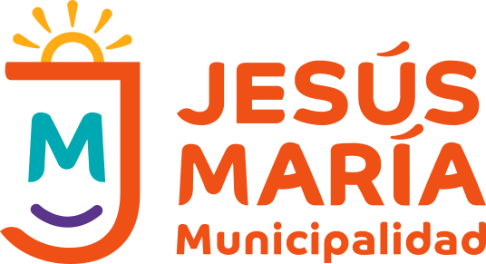
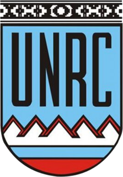

GESTIONAR CON DATOS
De la intuición a la evidencia
RÍO CUARTO 2026
Jornada provincial de Transparencia y gestión basada en evidencia
--Días
--Horas
--Min
--Seg

De la intuición a la evidencia
RÍO CUARTO 2026
Jornada provincial de Transparencia y gestión basada en evidencia
Un espacio de encuentro e intercambio institucional para avanzar desde la gestión de datos hacia los datos para la gestión, impulsando la transparencia, la innovación y la cocreación de valor público.
Experiencias de gobierno abierto, datos públicos y rendición de cuentas que fortalecen la confianza ciudadana.
Cómo medir, evaluar y usar datos para diseñar políticas públicas más efectivas en municipios y provincia.
Un espacio de encuentro entre gobiernos locales, academia, sector productivo y organizaciones de la sociedad civil.
Cronograma del jueves 3 de diciembre.
Recepción de participantes.
Palabras de apertura de la jornada.
El caso de Río Cuarto y su proceso para incorporar datos y evidencia a la gestión: el modelo de gobernanza de datos y su marco normativo, el Observatorio para el análisis y seguimiento de la gestión, y el plan de gestión con los avances del repositorio único de datos, como partes de una misma estrategia y con los desafíos que aún enfrenta el municipio.
Municipalidad de Río Cuarto
Cómo Luján de Cuyo conecta su Plan de Gestión 2023–2027 con metas públicas y seguimiento, gobernanza de datos e inteligencia artificial aplicada al mantenimiento urbano.
Municipalidad de Luján de Cuyo
Universidad Nacional de Río Cuarto
La experiencia de Jesús María en un modelo de gestión basado en evidencia, fortalecido por la certificación What Works Cities y los estándares de Ciudad Líder de RIL, con casos en salud pública y gestión territorial.
Municipalidad de Jesús María
Pausa y espacio de encuentro entre participantes.
Un taller en mesas de trabajo donde agentes municipales, universidades, sector productivo y organizaciones de la sociedad civil identifican necesidades de información, las contrastan con los datos que produce la Municipalidad de Río Cuarto y priorizan colectivamente una propuesta para una agenda de apertura y aprovechamiento de datos públicos.
Universidad Provincial de Córdoba
Pronto anunciaremos la lista completa de expositores.

Gobiernos locales
Experiencias de gestión, transparencia y datos abiertos en gobiernos locales.

Academia
Investigación y evidencia para el diseño y la evaluación de políticas públicas.
Sector productivo
Articulación público-privada e innovación basada en datos.
Con el botón «Reservar mi lugar»: se abre el formulario de Luma, donde completás tus datos y recibís la confirmación por email.
A agentes y funcionarios municipales, equipos técnicos, referentes de gobiernos locales, academia, sector productivo y organizaciones de la sociedad civil interesados en la gobernanza y el uso estratégico de datos.
En el Polo Científico Tecnológico, Andrés Dadone 875, Río Cuarto, Córdoba. La acreditación comienza a las 08:30.
Desde el email de confirmación de Luma o desde tu cuenta en luma.com.
Inscribite y recibí todas las novedades de la jornada.
Reservar mi lugar